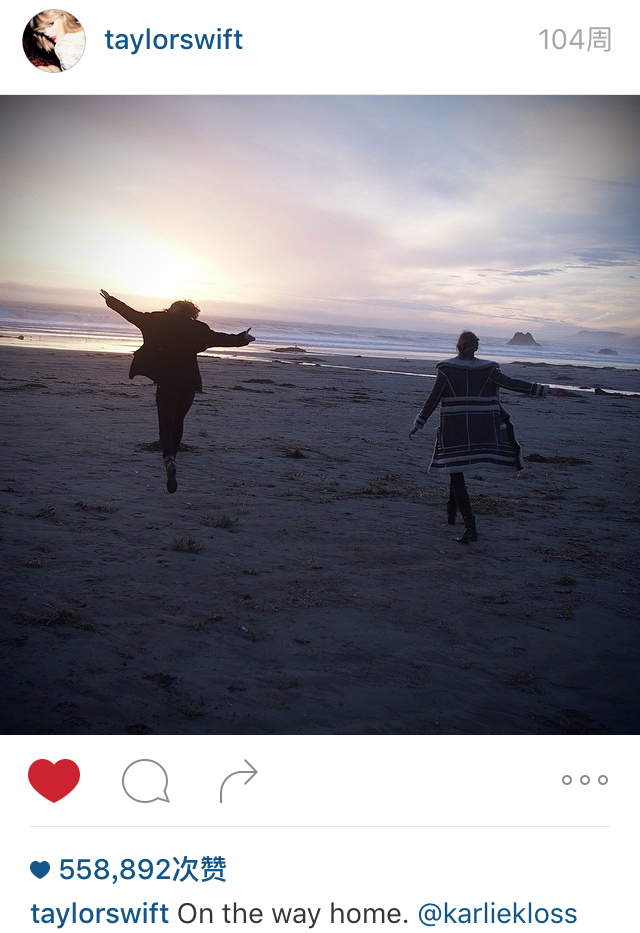
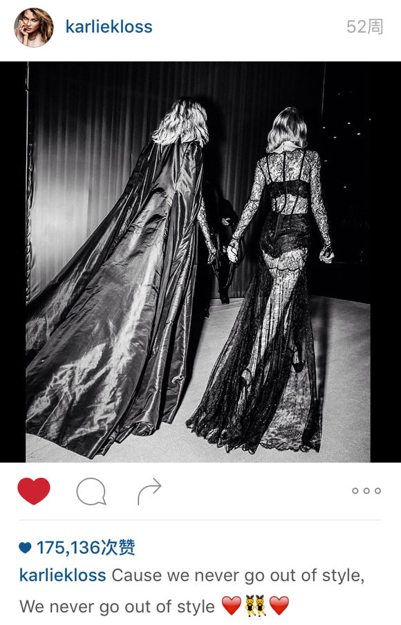
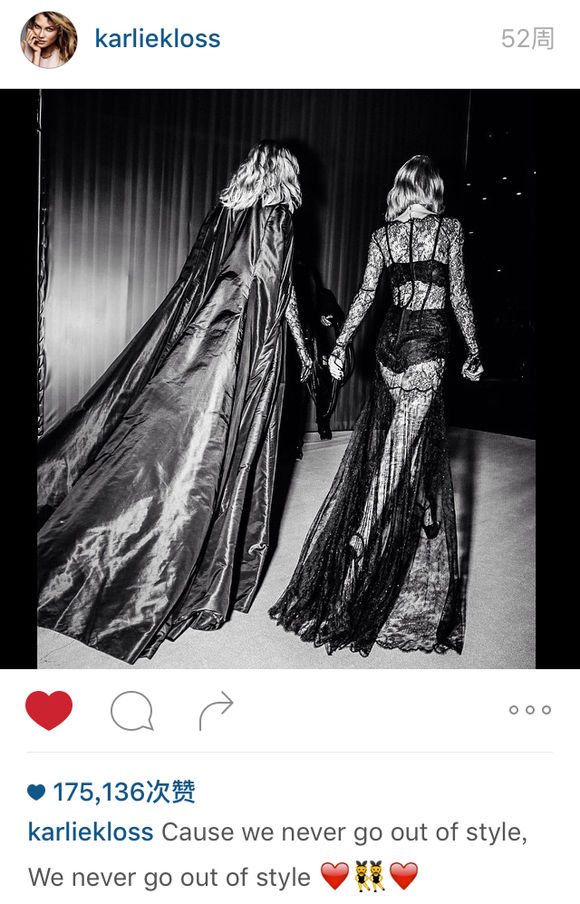

16. You Are in Love
在Wonderland那节中提到，TS曾在Tumblr上转发过粉丝解读Wonderland和Alice in Wonderland的关联，TS还点赞过很多粉丝对1989其他歌的解读。这种粉丝发现线索探寻解读的活动/行为称为"Swifties are the worst detectives ever"
2014年3月3、4号，TS和KK在加州Big Sur road trip，5号两人分别在INS上发了旅行的图，TS发的最后一张图上写着"On the way home. @karliekloss"
在1989发行后，有粉丝针对这则INS评论说 "You can feel it on the way home: on this week's episode of 'Swifties are the worst detectives ever'."
1. TS的解释和当事人的反应
现在我们都知道TS亲口说过You Are in Love是写她的好朋友Lena Dunham和Jack Antonoff的，而且说了很多遍。
通常情况下我们不应该怀疑她亲口所说的内容，否则就是指她骗人，这很不好。但有时候她亲口说的内容和实际情况有很明显的差异时，我们就要谨慎的质疑一下，她所说的和实际发生的究竟哪个才是真的。
*************举几个例子*************
例一：谁第一个听了1989？
2014年10月30号TS在THE TALK节目中说到她在专辑发行前举行了粉丝秘密试听会，然后主持人问（3分25秒）：“在粉丝试听会之前，你专辑最先给谁听了？”
TS回答：“那时我和我的好朋友ED一起巡演，在巡演期间，我们都在制作各自的专辑，在RED Tour的时候，他在创作最近发行的新专X，而我在创作1989，所以几乎每一天我们都会一起演出，他过来我的化妆间或者我过去他的化妆间，我会说'快看，我刚刚写完这首歌'或者'看，我在完善这首歌'，所以他是第一批听这张专辑的人之一，而且有这样的朋友挺有趣的，因为你欣赏他们的音乐品味，他们会很大方抒发对音乐的见解，比如ED对自己喜欢的歌曲就很坚持，他会说'如果这首歌不收录到专辑我一定会很生气，这首必须收录'能有这样坚持己见的朋友真的很棒，他们会给你建议”
TS说是ED，因为RED巡演期间他们一直在一起，TS创作1989新歌时都会给ED听，然后听取ED的意见。
但是在2015年3月Vogue花絮视频中，她又给出了另一个答案。
TS当着KK的面说，她给KK听了整张1989，before anyone else heard it，KK才是第一个听到1989的人。
例二：2014年RED落选格莱美年专让她励志做一个不一样的新专辑？
这话她说了很多遍，大概和她说URIL是写Lena和Jack的一样多。最近一次说是在1989 live官方视频中，她说：
（RED落选年专后）我回家之后思绪万千，思索着我未来的方向，我当时的创作内容，我觉得我需要改变些什么，之后我上床睡觉，在凌晨四点醒来，那一刻，我知道下一张专辑是什么样子，我必须完全转变曲风，专辑名字是1989，在这个新阶段，人生的新篇章，一切都必须是崭新的。
但是呢，格莱美是14年1月26号，1989在14年3月前就全部完工了。TS痛定思痛，决定转变曲风，开始新的篇章，在1个月内搞定了1989？
这简直比有些人说的“TS在认识KK之后3个月内写完了1989”还奇幻。
回想一下RED时代，她11年12月13号生日那天已经做了预告：4专是RED，而RED实际完工是12年6月，12年10月发行RED时她就定好了13年RED巡演的行程。
你们觉得TS在14年3月前已经完工的1989会是14年1月底才决定曲风、决定未来的方向吗？TS从来都是有长期规划的人，因为格莱美如何如何让她决定怎样怎样，不过是一个说辞罢了。
例三：Love Story来源于书上的故事不是她个人经历？
TS现在谈起Love Story时说，这是在她尚未恋爱前，根据书里的故事改编的。
When I was young, before I started having any kind of actual knowledge of what love was, I would write songs about love that I had read about. And I read about these two teenagers, these two star-crossed lovers who couldn't be together, who wanted to run away together. And I thought, and I really wish they had a happier ending. Their names are Romeo and Juliet, and this song's called "Love Story".
在我年轻的时候，我尚未开始追寻爱的真谛，所以我把在书里读到的爱情写成歌曲。我读到一个关于两个年轻人的故事，一对无法在一起的苦命恋人，想要逃离尘世私奔。然后我想，要是他们能有一个美好的结局该多好。他们就是罗密欧与朱丽叶，而这首歌叫做”Love Story”。
但是在早期谈起Love Story时她不是这么说的，她说Love Story写的是
{kind=link}
A love that you've got to hide because for whatever reason it wouldn't go over well. I spun it in the direction of Romeo and Juliet; our parents are fighting. I relate to it more as a love that you cannot really elaborate on —— a love that maybe society wouldn't accept or maybe your friends wouldn't accept.
这是一段必须隐藏起来的恋情，因为我知道无论怎样它都不会有好结局，我借用了罗密欧与朱丽叶的故事，我们的父母在争吵，我觉得这段爱情无法详说，因为无论是这个社会，或是我的朋友们，都不会接受。
直到RED时期，采访时谈到Love Story，她说的都是：
这首歌的写作背景是在我17岁时，父母强烈反对我和一个人交往，于是我回到房间，关上门趴在地上写了Love Story。
这首歌来源于她的个人经历，但是到了1989时期，她希望淡化她的过去，改口说这是她尚未恋爱前，根据书里的故事改编的歌。
例四：TS和KK第一次见面是在2013年VS？
（额外举一个KK的例子）
We met at the show, we never met before but we're BFFs now. It's nice to meet another American girl, we're the same age and she's so inspiring — she's so talented and she's true to who she is. She's a cool girl and I'm glad she's in the show this year, she rocked it.
KK在13年底说她和TS是在VS上认识的，以前从没见过，然后就成为BFF了。
这不是睁眼说瞎话吗，VS之前她们接触的记录请看番外1 – before 2013VS。
*************举例结束*************
回到You Are in Love
“You Are in Love是写给Lena和Jack的”这个说法，连两个当事人自己都表示怀疑，这就不得不让我们去探究一下，这个说法的真实性有多大。
从1989发行前开始
2014年9月10号，关于URIL最早的报道来自滚石杂志（最早关于Bad Blood的报道也是滚石），里面有一段
As a bonus track on her new album, 1989, Swift co-wrote a song with Jack Antonoff of fun., who happens to be her pal Lena Dunham's boyfriend. It's called "You Are Love" and Antonoff describes it as having "a very 'Secret Garden' Springsteen vibe." According to Dunham: "Jack and I have a lot of existential and political issues with marriage. But if we ever do get married, there's no fucking way Taylor is not playing that song."
TS新专辑1989中有一首歌，是TS和Fun乐队的Jack Antonoff，Lena的男朋友合写的，这首歌叫做"You Are in Love"，Jack描述其为很有Bruce Springsteen的歌曲< Secret Garden >的感觉，而Lena表示“Jack和我在是否结婚的问题上还未达成一致，但如果我们打算结婚，一定会让Taylor在婚礼上放这首歌”
9月16号，针对滚石杂志的报道，Jack发推回应

"you are love"是一个美妙的标题，但"You Are in Love"更加美妙和真实。
10月13号，Jack接受Billboard采访时说

自己和TS合作了4首歌，依次是I Wish You Would，Sweeter Than Fiction，Out of the Woods和You Were in Love。
这里也许是Billboard的编辑手误打错了，不应该是Jack记错歌的标题，如果是他记错，这首歌就绝对不会是写他和Lena的了，过去时和现在时的含义差别太大。
10月17号，TS在INS上贴了一段为You Are in Love手写的歌词
One night, he wakes
strange look on his face
pauses then says
"You're my best friend"
and you knew what it was
He is in love
记住这段歌词，以及TS强调的这两句话，后文展开说
Lena在推特上转推了TS的这张图并评论
你知道的，这是我未来的婚礼歌

直到这时，Jack说过这是首很有爱很美的歌，Lena说过要把这首歌作为他们以后（如果结婚的话）的婚礼歌。
TS还没有说这首歌是写Lena和Jack的，Lena和Jack也没有说这首歌是写自己的。
10月23号，TS上Jimmy Kimmel秀，被问起这段手写歌词，TS第一次说出“这首歌是写Lena和Jack的关系”
（JK读了那段手写歌词，然后问TS）
JK: Could I tell you what I think of this? Are you sing he is in love with someone else?
JK：我能说说我的想法吗，这段歌词的意思是不是指他爱上别的什么人了？
TS: No… It's actually a commentary. It's a song that I wrote that was loosely based on… I wrote it with my friend Jack Antonoff, who's dating my friend Lena, whom you know…
TS：不…这实际上算是一种解说，我写这首歌是松散的基于…我是和我的朋友Jack一起写的，就是Lena的男朋友，你知道吧…
JK: Yes, Lena Dunham. Yes.
JK：嗯，Lena Dunham，知道
TS: And, Jack sent me this track to the song. It was just an instrumental track he was working on and immediately I knew what the song needed to be and I wrote it as kind of a commentary on what their relationship has been like and so it's actually me looking in and going, like, this happened, then that happened and that happened and that's how you knew. You got… you're in love.
TS：Jack把他正在制作的音轨发给我，我立刻就知道这首歌应该写什么，然后我写了类似于他们爱情是怎样的一种解读，从我的视角去看，发生了这个发生了那个然后你知道，you're in love
JK: So, when I hear the word friend and I think that's it, there's no love. No love's happening… I think of you as a friend and that that's…
JK：嗯哼，当我听到friend这个词时我在想没有love，没有爱情发生…你们只是朋友
TS: But, no. Isn't it supposed to be… you're supposed to be friends and then you're supposed to be in love and that's the whole package deal?
TS：不，不，不是这样的…你们先是朋友然后你们in love了，这才是整个过程，明白不？
TS说她一收到伴奏就立刻想到要写什么，能够立刻写出的事一定是深刻印在她脑海中，反复思考过的事。
TS说她是站在旁观者的角度描述了Jack和Lena的爱情，这个爱情故事是从friend到lover的转变。
10月24号， TS在Jimmy Kimmel秀上讲出URIL是写Jack和Lena的第二天，Jack为MTV news采访TS，再次说起这首歌。
JA: You Are in Love
TS: You Are in Love. Basically, this song was a track that you sent me and it was the most beautiful, poignant, simple track I've ever received and I wrote it really quick. I remember writing it really fast. Cause, I just remember thinking it sounded so much like the sound of, like, actual love- true love.
TS：You Are in Love. 这首歌的音轨是你发给我的，这是我收到的最美、最深刻、最单纯的音轨，我很快就写了歌词，我记得我写的非常快。因为我记得它听起来就像是love，true love
JA: Huh.
TS: Through thick and thin, sickness and health love. Not like infatuation, 'I saw you, I thought you were cute – let's go dance the night away, baby' love. Like, 'Love' love.
TS：（这首歌描述的爱）是无论艰难困苦疾病健康都会在一起的爱，不是一种迷恋/激情，它不是“我遇见你，我觉得你很漂亮，然后对你说亲爱的咱们来跳个舞吧”的那种爱情，这是一种“纯爱”的爱
JA: well, we talked about it being a wedding song that…As soon as I heard it, I remember we were just talking about like this is the wedding song.
JA：我们（指他和Lena）曾谈论过这是一首婚礼歌…我一听到这首歌，我们就说这是一首婚礼歌
TS: Yeah
JA: It sounds like that kind of love.
JA：听起来就是那种类型（婚礼/圣洁/纯粹）的爱
TS: I remember sitting in my bed and when I realized that these lyrics that I was writing were channeling everything Lena's told me about the two of you and…
TS：我记得我坐在床上然后意识到我写的这些歌词全都是参照Lena告诉我的关于你俩之间的事…
JA: That I didn't know until yesterday.
JA：直到昨天我才知道还有这回事
TS: (laughs) No. I didn't wanna be creepy about it, like 'I wrote a song about your relationship.' But, I was, like, sitting up in bed and I was like 'one night, he wakes.' Like… And, I was really emotional writing the song because I am so happy for you guys and you guys are like the benchmark of actual true, real love, like it talks about in that song and I didn't tell Lena or you about the fact that that was what I was channeling when I was writing it, but then Lena… I figured when Lena deemed it her wedding song that she knew I was talking about you two.
TS：（笑）哦不，我怕直接说“我写了一首关于你们俩的歌” 会吓到你们。但是，我就是坐在床上然后写下“one night, he wakes.”这样的词…我投入了很多情感在这首歌中因为我为你俩高兴，你们俩就像是true love，real love的范本，就像我在歌中所写的。我没有告诉Lena或者你我其实是参考你们来写的，但是我看到Lena……我以为她说这首歌是婚礼歌是已经知道这首歌是写你们俩的呢。
JA: No
JA：不，我们不知道
看到这里我有2个疑问
1.TS在URIL中描写了很多恋爱相处的细节，比如
外套上的纽扣，轻松的玩笑话，半夜开车喝咖啡，两人肩膀的相擦
星期天早上在他家烤面包，你放下过去重新开始，亲吻、斗嘴、谈话，半夜他醒来对你说“你是我最好的朋友”，你意识到他爱上你了
两人在雪中起舞，他留着你的照片
据TS所说，这些来源于Lena告诉她的Lena和Jack之间发生的事，然而这么多具体的细节，无论是Lena还是Jack都没有觉得是写自己的。他们觉得这是一首很有爱的歌，是一首可以在婚礼上放的歌，但不觉得这首歌是写的自己。
2.不同与写自己的恋爱经历（写得再露骨也是她自己的），照TS所说，她写的是她2个好朋友的爱情故事，她都不提前跟人打声招呼就把别人的隐私写成了歌，写了私下唱唱也就算了，她可是收录进专辑公开发行让全世界人民都听到的，她都没有征求过2个朋友的意见，其中一个还是这首歌的合作者，当她告诉全世界这首歌是写2个好朋友之后，才告诉这2个好朋友这首歌是写他们的，而他们在听到她说这首歌是写自己之前完全不知道还有这样的事。
这个过程合理、寻常？
TS平时就是这么做人、这么对待朋友的？
10月26号， 1989发行的前一天，Lena在推上列了1989中她最喜欢的歌

有This Love，Blank Space，Out of the Woods，没有You Are in Love。
Lena之前两次表示过如果自己结婚，那婚礼上一定要放URIL，她其实挺喜欢这首歌的，但在TS说这首歌是写Lena和Jack之后，这首歌就不在favorite名单之列了。
很多TS的朋友都被问及或者主动表达过1989中最喜欢哪首，通常这首歌要么是他们知道写作背景，比如ED选Bad Blood、Selena选Wildest Dreams，要么是与自己有关，比如Dianna在RED中选Everything Has Changed。
但是Lena在TS说出You Are in Love是写自己之后就不选这首了。
2015年2月8号，Tavi Gevinson为ELLE6月刊采访TS时问起URIL，TS说：
I wrote the song about things that Lena has told me about her and Jack. That's basically stuff she's told me. And, I think that that kind of relationship –God, it sounds like it would just be so beautiful – would also be hard. It would also be mundane at times.
她依然说她是写Lena告诉她的Lena和Jack的故事
15年4月，在南非版Glamour中公布了一段采访，关于URIL TS回答：
The song 'You Are in Love' is one that I did with Jack Antonoff and it's strange because he sent me the track and I ended up writing these lyrics that very much mirrored what his relationship with his girlfriend and my best friend looked like to me, and the song is kind of told as if I'm looking at their story through a window or something.
这里又变成mirror他们的关系，是从她的视角像透过窗户或者别的什么来看他们的故事，并不是那么写实。
15年5月5号，1989东京首演，在唱URIL之前，TS说：
The song I'm about to play you is probably the most lovey-lovey -love love song I've ever written. It's a song that I wrote about my two best friends who were in love - they still are actually – and kinda looking at their relationship and telling their story.
我马上要唱给你们听的这首歌是我写过的最有爱最有爱的一首love song，这首歌是写我两个相爱的好朋友 – 当然他（她）们现在还在一起 – 这首歌唱的就是他（她）们的故事。
到这里TS又退了一步，没有再说点名说这是写她的哪个朋友。
将上述TS对URIL的解释，以及Lena和Jack的反应做个总结
1.他们全都认为URIL是一首非常有爱的歌；
2.Lena和Jack都觉得这首歌可以当婚礼歌；
3.即使Lena和Jack觉得这首歌可以当婚礼歌，也从没觉得这首歌是写自己的，哪怕Jack是这首歌的合作者之一；
4.TS是在Lena说了URIL可以当婚礼歌之后才说出这首歌是写Lena和Jack的；
5.Lena和Jack听到TS说这首歌是写自己后表示从不知道还有这样的事；
6.听到TS说URIL是写自己后，本来说要当婚礼歌的URIL就不在Lena 1989 favorite歌单中了；
7.TS对于“这首歌是写Lena和Jack”这一说法，一会（面对Jack时、ELLE采访时）说 “写Lena告诉她的故事”（写实），一会（JimmyK秀、Glamour杂志）说 “写的是以自己的视角看两人的关系”（透镜化），到巡演时说“写的是两个相爱的朋友的故事”略去朋友姓名；
8.这首歌写的是2个人从friend变成lover的爱情故事，不是激情，是纯爱；
2. 歌词中的违和感
TS在14年宣传1989时为每一首歌都手写了一段歌词，其中有些词句被她用加粗、放大、下划线、间距等方式着重显示出来。
写给You Are in Love的是这段，着重列出来的是"You're my best friend"和He is in love
日后TS也点赞过很多You Are in Love的歌词，但点赞最多的还是这一段

One night he wakes, strange look on his face
Pauses, then says, "you're my best friend"
And you knew what it was, he is in love
这段格外受她偏爱
如果这一场景发生在一对男女之间，简直诡异极了
某天半夜男人醒来，脸上带着陌生的表情对女人说：“你是我最好的朋友”，然后女人意识到，他爱上自己了。
也就是女人在他说“你是我最好的朋友”之前是不知道或者不确定他是对自己有那意思的咯。
没那意思，女人和男人就睡到一张床上去了，这是friends with benefits（炮友）吗？不对啊，TS说这首歌not like infatuation（不是迷恋/激情）是能做婚礼歌的"love" love song（纯爱歌）。
在这段之前的歌词中描述了两个人之间有很多暧昧动作、半夜一起开车喝咖啡、休息天早上在他家一起做早餐、穿他的衣服、亲吻、斗嘴、睡在一起，可这些都没让女人意识到"he is in love"，直到他半夜用"you're my best friend"来表白，女人才发现，原来他爱上自己了
世界上真的有男人用"you're my best friend"向女人表白吗，你确定一个男人对女人说这句话是在表白而不是在发好人卡？
难怪Jimmy Kimmel说当他看到"you're my best friend"这句时就觉得这2人之间没有love，然后再看到"he is in love"，就问TS他是不是爱上别人了。1989 live官方视频刚出的时候也有粗糙的字幕组直接把这段翻译成了他爱上了别人。
Jimmy Kimmel和字幕组的反应很正常，不知道歌词背景的普通人看到这些歌词都不会认为he和you是相爱的，这太不合常理了。实在无法想象一对男女friend是如何心无杂念的睡在一张床上，然后用“你是我最好的朋友”做表白变成了lover。而且这个诡异的故事还被TS称为是true love，real love的范本，太可怕了。
难怪Lena和Jack从不觉得这首歌是在写自己。
如果换个场景，假设这一段故事发生在两个闺蜜之间。
两个女性好友之间牵手、抱抱、亲亲、穿对方的衣服、晚上睡在一起，都很正常。
在日常的相处中，一次次触碰中，一次次闲聊玩笑中，情愫渐起，但是她(you/she，在1989巡演中TS多次将you唱成she)不确定这些暧昧是否只是她单方面的感受，在对方心中是否只把她当普通闺蜜。
之后有一天晚上
那个人醒来，脸上带着陌生的表情对她说“你是我最好的朋友”，这时她懂了，那个人也是喜欢自己的。
这个剧情就一点都不违和。
这不是infatuation，而是"love" love
有什么比发现自己喜欢的人也喜欢自己更让人欣喜呢
所以URIL中，她最偏爱这段
One night he wakes, strange look on his face
Pauses, then says, "you're my best friend"
And you knew what it was, he is in love
这段中她最想强调的就是
"You're my best friend"的表白
和He is in love
3. 另一种解读
10月27号，1989发行，完整歌词释出
大家发现有些歌词与TS和KK的经历很匹配，比如
You two are dancing in a snow globe round and round
2013年VSFS最后一节“雪天使”中，飞舞的“雪花”，TS和KK在舞台上互动跳舞
比如
You can feel it on the way home
比如
Morning, his place, burn toast, Sunday
2011年5月Met gala上TS和KK再次经人介绍认识， joked about having a "baking date"
2012年2月刊Vogue封面故事中，TS指着墙上KK的照片说"I love Karlie Kloss, I want to bake cookies with her!"
2012年12月Teen Vogue采访KK和Joan Smalls，KK说"I joked with her at one point when I met her at the Met. We were talking about having a baking date, so maybe we'll have to film that for the show."
14年初，连Claire都收到了Karlie's Kookies，TS和KK说了几年的baking date, bake cookies, 在2013VSFS成为BFF后，终于兑现了吧。
{kind=link}
比如
You keep his shirt
在3月之前她们有没有互换衣服没人知道，她们从13年11月VSFS成为朋友，到14年3月已经是亲密的BFF，期间4个月空白无记录（和Swiftgron的节奏一样），VS之后的第一次合影就是3月1号的pre-Oscars party， 2号Vanity Fair Oscar Party，然后3、4号就road trip了。
{kind=link}
{kind=link}
从road trip开始她们互换衣服，或情侣装就很多很多了，同款、类似、互换的衣服饰品物品看这个贴。

再加上"you're my best friend"
这是一首由friend变成lover的"the most lovey-lovey -love love song I've ever written"。
Lena和Jack对这首歌是写给自己表示怀疑；
TS将好朋友的隐私写成歌却不进行告知不征得允许的反常举动；
将两个男女角色带入歌词有强烈违和感；
将两个女性好友角色带入后没有违和感；
URIL作为1989中最后一首TS和Jack合作的歌，大致的完成时间正值TS与DA分手后，TS和KK迅速成为朋友时；
以上种种让我判断，You Are in Love并非TS口中所说写Lena和Jack，而是写她自己。
1989和RED一样，是前一个爱情故事的结束和新的开始。
在歌词中有一句
And for once you let go of your fears and your ghosts
TS放下的fears和ghosts是什么？
1) fears
在Wonderland中
Didn't you flash your green eyes at me?
Didn't you calm my fears with a Cheshire cat smile?
前一段恋情，那个有green eyes的人用她的微笑让TS摆脱了心中的恐惧
green eyes在RED和1989中出现的位置是
Is green eyes and freckles and your smile in the back of my mind making me feel like —— < Everything Has Changed >
Didn't you flash your green eyes at me —— < Wonderland >
In the dead of night, your eyes so green —— < I Know Places >
Smile/laugh在RED和1989中出现的位置是
Is green eyes and freckles and your smile in the back of my mind making me feel like —— < Everything Has Changed >
You throw your head back laughing like a little kid —— < Begin Again >
Your smile, my ghost, I fell to my knees —— < This Love >
Didn't you calm my fears with a Cheshire cat smile —— < Wonderland >
这几首歌的归属很明确，前一段恋情中有green eyes的人是DA。
有人一直争论DA到底是不是绿眼睛，本文不展开，详情请看这个帖子第292、293楼。
无论是在Wonderland中被DA驱散的fears，还是在URIL中因KK而放下的fears，都是她在开始一段恋情之初就意识到了，这样一段关系对她的事业她的形象来说都是bad news，她们之间有没有未来，未来在哪里，她们之间会有多少阻碍，这段关系能持续多久，她心里没底，a future I can't see。
也许没有未来，也许困难重重，但外表乖乖女内心叛逆的TS还是一次次的选择了break the old rules, let go of fears, I gotta have you。
2) ghosts
And for once you let go of your fears and your ghosts
这里的ghosts用的是复数，不是指幽灵/灵魂，是指过去，不好的回忆。
TS放下过去，放下对未来的担忧，重新开始。
对比看RED和1989中，一段恋情刚刚开始时的描述。
放下过去
And for once you let go of your fears and your ghosts —— < You Are in Love >
And for the first time what's past is past—— < Begin Again >
放下畏惧
And for once you let go of your fears and your ghosts —— < You Are in Love >
Didn't you calm my fears with a Cheshire cat smile —— < Wonderland >
找到归宿
You can feel it on the way home —— < You Are in Love >
And your eyes look like coming home —— < Everything Has Changed >
两段开始，何其相似。
人生若只如初见，何事秋风悲画扇。
Begin Again的初见那么美好，最后却在1989中变成苦痛挣扎两两相忘。
You Are in Love中on the way home的心动能否走到最后，能否如她所愿never go out of style，就交给时间去证明了。
 
